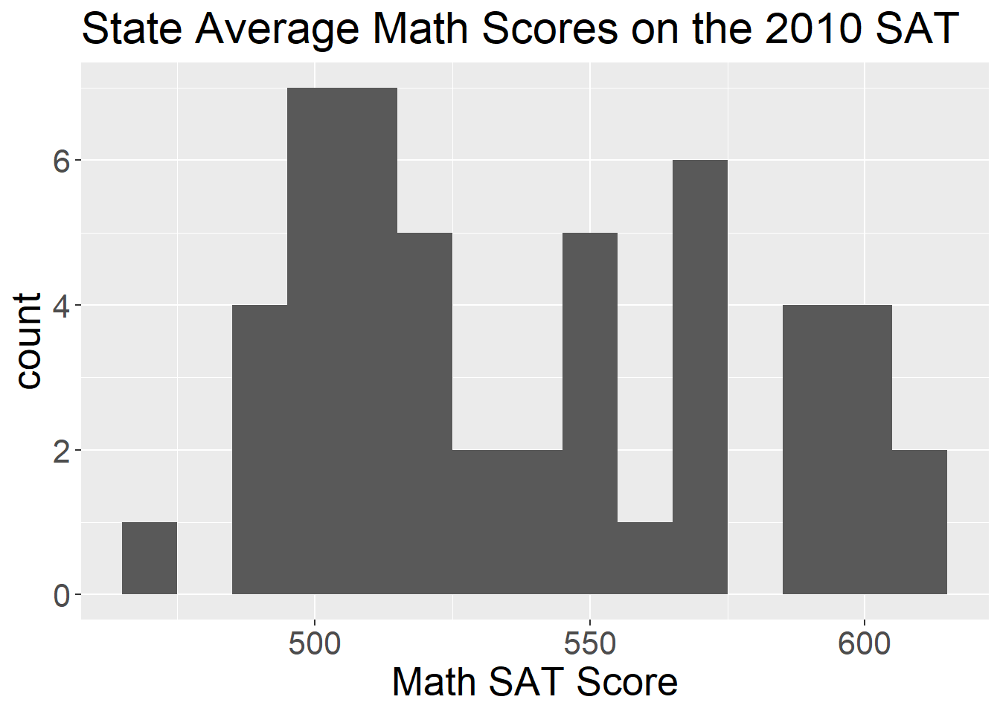
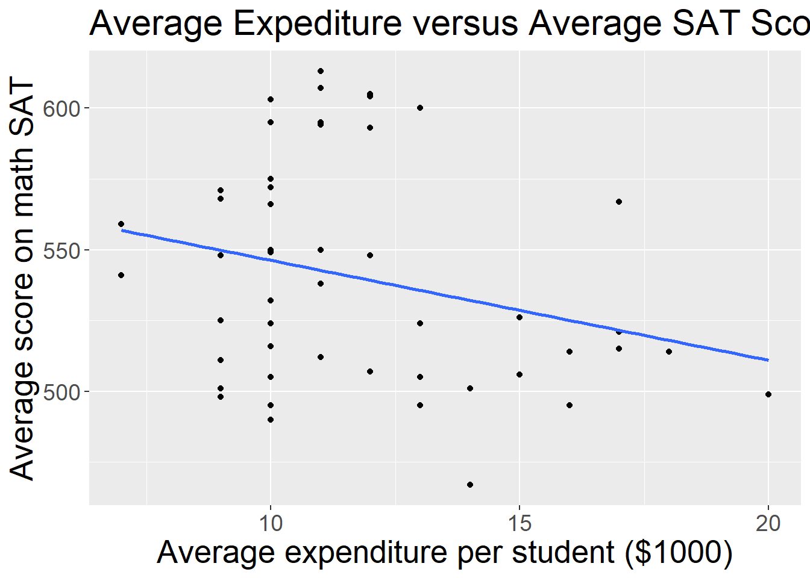
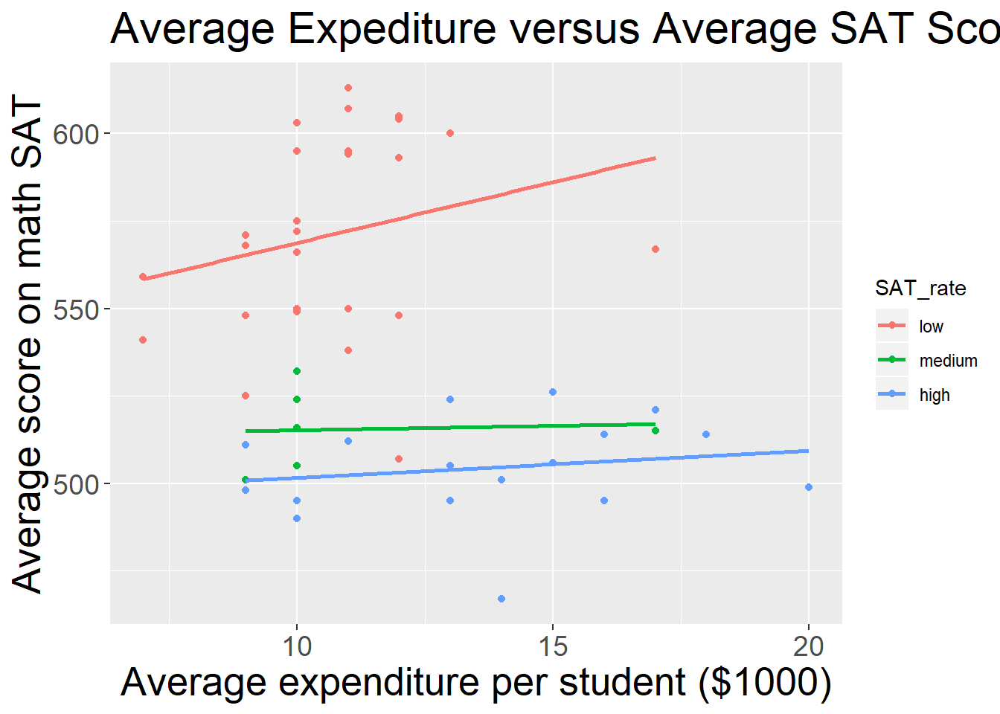
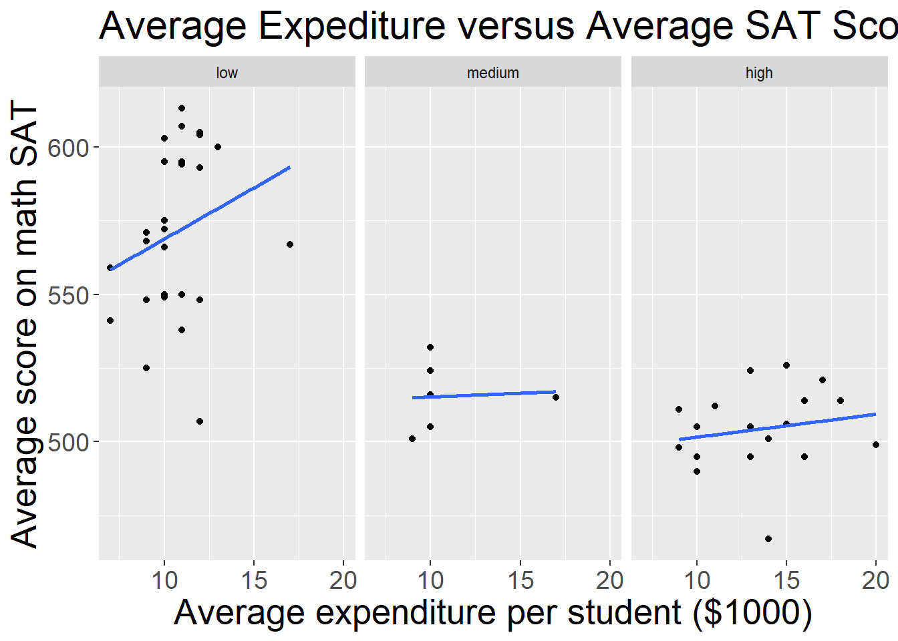
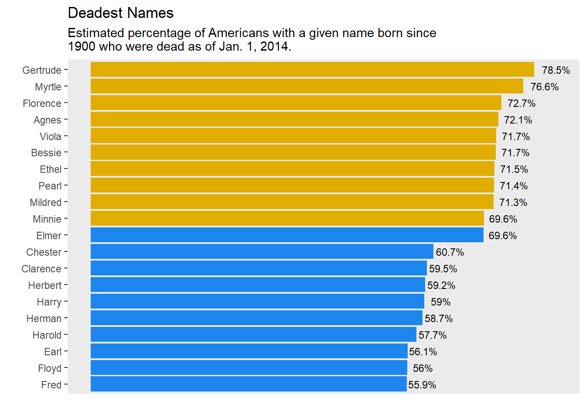

How to make a plot by ggplot2
Wenyu Zhu
29 Oct, 2019
1 Get started
1.1 Installation
We assume you have already installed R (https://www.r-project.org) (R Core Team 2019) and the RStudio IDE (https://www.rstudio.com). Next we need to install the tidyverse package and mdsr package in R
install.packages('ggplot2')
install.packages('mdsr')library(ggplot2)
library(mdsr)1.2 A quick example
curve(dnorm, from=-4, to=4, ylab="PDF", main="PDF of a standard normal", col="brown", lwd=4)
This is the simplest chart without importing data.
2 Make a plot
2.1 ggplot2
In ggplot2
the ggplot() command creates a plot, with the argument data telling us which data to use
the aes() command within ggplot() indicates the desired x and y variables
plots are built with elements
the element geom_point() indicates that we are using a scatterplot
We will be using the data set CIACountries from the mdsr package. The CIACountries data table contains the following seven variables for 236 countries:
population (pop)
area (area)
gross domestic product (gdp)
percentage of GDP spent on education (educ)
length of roadways per unit area (roadways)
internet use as a fraction of the population (net_users)
number of barrels of oil produced per day (oil_prod)
head(CIACountries)## country pop area oil_prod gdp educ roadways net_users
## 1 Afghanistan 32564342 652230 0 1900 NA 0.06462444 >5%
## 2 Albania 3029278 28748 20510 11900 3.3 0.62613051 >35%
## 3 Algeria 39542166 2381741 1420000 14500 4.3 0.04771929 >15%
## 4 American Samoa 54343 199 0 13000 NA 1.21105528 <NA>
## 5 Andorra 85580 468 NA 37200 NA 0.68376068 >60%
## 6 Angola 19625353 1246700 1742000 7300 3.5 0.04125211 >15%Make a scatterplot of Gross Domestic Product and Education.
g <- ggplot(data = CIACountries, aes(y=gdp, x = educ)) +
geom_point(na.rm=TRUE)+
theme(axis.text=element_text(size=16),
axis.title=element_text(size=20),
plot.title=element_text(size = 24)) +
ylab('Gross Domestic Product') +
xlab('Percentage of Gross Domestic \n Product Spent on Education') +
ggtitle('Gross Domestic Product and Education')
gScatterplot in which net_users is mapped to color.
g + geom_point(aes(color = net_users), size = 3,na.rm=TRUE) +
guides(color=guide_legend(title="Internet Use"))
Scatterplot using both location and label as aesthetics.
g + geom_text(aes(label = country, color = net_users), size = 3) +
guides(color=guide_legend(title="Internet Use"))Scatterplot in which net_users is mapped to color and educ mapped to size.
g + geom_point(aes(color = net_users, size = roadways)) +
guides(color=guide_legend(title="Internet Use"),
size=guide_legend(title='Roadway'))2.2 Scale
From the graphs that we made it is difficult to discern differences in GDP because there is a right-skew in GDP and we made a choice to use a linear scale on our plots.
A logarithmic scale would make the plot much more readable.
We will use the coord_trans() function to put our data on a logarithmic scale.
Scatterplot using the logarithmic transform of GDP that helps to mitigate visual clustering caused by the right-skewed distribution of GDP among cities.
g + geom_point(aes(color = net_users, size = roadways)) +
guides(color=guide_legend(title="Internet Use"),
size=guide_legend(title='Roadway')) +
coord_trans(y = "log10")As an alternative to coord_trans() we can use the scale_y_continuous() function. The only difference is where the tick marks on the axis are drawn.
The functions scale_x_continuous(), scale_x_discrete(), and scale_color() all perform analogous operations on different aesthetics.
Scatterplot using the logarithmic transform of GDP that helps to mitigate visual clustering caused by the right-skewed distribution of GDP among cities.
g + geom_point(aes(color = net_users, size = roadways)) +
guides(color=guide_legend(title="Internet Use"),
size=guide_legend(title='Roadway')) +
scale_y_continuous(name = 'Gross Domestic Product', trans = 'log10')2.3 Facets
Using multiple aesthetics such as shape, color, and size to display multiple variables can produce a really hard to read graph!
Facets are multiple side by side graphs used to display levels of categorical variables which can help.
Scatterplot using facets for different ranges of Internet connectivity.
g + geom_point(alpha = 0.9, aes(size = roadways)) +
coord_trans(y = 'log10') +
facet_wrap(~net_users, nrow = 1) +
theme(legend.position = 'top') +
theme(axis.text.x =element_text(size=10))2.4 Layers
We can plot data from more than one data table together.
We will now look at the MedicareProviders data set for an example. This data set tells how much different medical procedures cost in each state. The data set contains the following variables:
medical procedure code (drg)
state (stateProvider)
number of charges with corresponding code (num_charges)
mean charge for corresponding code (mean_charge)
head(MedicareCharges)## Warning: Detecting old grouped_df format, replacing `vars` attribute by
## `groups`## # A tibble: 6 x 4
## # Groups: drg [1]
## drg stateProvider num_charges mean_charge
## <chr> <fct> <int> <dbl>
## 1 039 AK 1 34805.
## 2 039 AL 23 32044.
## 3 039 AR 16 27463.
## 4 039 AZ 24 33443.
## 5 039 CA 67 56095.
## 6 039 CO 10 35252.Let’s create a new data table with only the data from New Jersey. Bar graph of average charges for medical procedures in New Jersey
ChargesNJ <- MedicareCharges %>% filter(stateProvider == 'NJ')
p <- ggplot(data = ChargesNJ,
aes(x = reorder(drg, mean_charge),
y = mean_charge)) +
geom_bar(fill = 'gray', stat = 'identity') +
ggtitle('Average Medical Costs by Procedure in New Jersey') +
ylab('Statewide Average Charges ($)') +
xlab('Medical Procedure (DRG)') +
theme(axis.text.y =element_text(size=16),
axis.title=element_text(size=20),
plot.title = element_text(size = 24),
axis.text.x = element_text(angle = 90, hjust = 1))
pBar graph adding a second layer to provide comparison of New Jersey to other states. Each dot represents one state while the bars represent Ne Jersey.
p + geom_point(data = MedicareCharges, size = 1, alpha = 0.3)3 Several kinds of plot
3.1 Histogram
We will use the math SAT scores (math) from each state in the SAT_2010 data set.
Histogram showing the distribution of Math SAT scores by state.
head(SAT_2010)## state expenditure pupil_teacher_ratio salary read math write total
## 1 Alabama 10 15.3 49948 556 550 544 1650
## 2 Alaska 17 16.2 62654 518 515 491 1524
## 3 Arizona 9 21.4 49298 519 525 500 1544
## 4 Arkansas 10 14.1 49033 566 566 552 1684
## 5 California 10 24.1 71611 501 516 500 1517
## 6 Colorado 10 17.4 51660 568 572 555 1695
## sat_pct
## 1 8
## 2 52
## 3 28
## 4 5
## 5 53
## 6 19g <- ggplot(data = SAT_2010, aes(x = math)) +
theme(axis.text=element_text(size=16),
axis.title=element_text(size=20),
plot.title=element_text(size = 22)) +
xlab('Math SAT Score') +
ggtitle('State Average Math Scores on the 2010 SAT')
g + geom_histogram(binwidth = 10)
3.2 Density
Density plot showing the distribution of the Math SAT scores by state.
g + geom_density(adjust = 0.3)3.3 Bar graphs
A bar plot showing the distribution of MATH SAT scores for a selection of states.
ggplot(data = head(SAT_2010, 10), aes(x = reorder(state, math), y = math)) +
geom_bar(stat = 'identity') +
theme(axis.text=element_text(size=16),
axis.title=element_text(size=20),
plot.title=element_text(size = 22)) +
xlab('Math SAT Score') +
ggtitle('State Average Math Scores on the 2010 SAT for Top 10 States')3.4 Scatterplot
Recall our SAT_2010 example:
head(SAT_2010)## state expenditure pupil_teacher_ratio salary read math write total
## 1 Alabama 10 15.3 49948 556 550 544 1650
## 2 Alaska 17 16.2 62654 518 515 491 1524
## 3 Arizona 9 21.4 49298 519 525 500 1544
## 4 Arkansas 10 14.1 49033 566 566 552 1684
## 5 California 10 24.1 71611 501 516 500 1517
## 6 Colorado 10 17.4 51660 568 572 555 1695
## sat_pct
## 1 8
## 2 52
## 3 28
## 4 5
## 5 53
## 6 19A scatterplot of the SAT math scores and expenditure by pupil by states.
g <- ggplot(data = SAT_2010, aes (x = expenditure, y = math)) +
geom_point()
gA scatterplot of the SAT math scores and expenditure by pupil by states with a smooth trend line.
g <- g + geom_smooth(method = 'lm', se = 0) +
xlab("Average expenditure per student ($1000)") +
ylab("Average score on math SAT") +
ggtitle('Average Expediture versus Average SAT Score by State') +
theme(axis.text=element_text(size=14),
axis.title=element_text(size=20),
plot.title=element_text(size = 22))
g
We will now place states into bins (e.g., high, medium, low) by the percentage of students taking the SAT.
Scatterplot using the color aesthetic to separate the relationship between numeric variables by a third categorical variable.
SAT_2010 <- SAT_2010 %>%
mutate(SAT_rate = cut(sat_pct, breaks = c(0, 30, 60, 100),
labels = c('low', 'medium', 'high')))
g <- g %+% SAT_2010
g + aes(color = SAT_rate)
Scatterplot using facet_wrap() to separate the relationship between two numeric variables by a third categorical variable.
g + facet_wrap(~SAT_rate)
3.5 Boxplot
Boxplots can be useful for displaying a numerical response variable against a categorical explanatory variable. It is a graphic description of the five-number summary (minimum, Q1, median, Q3, and maximum).
We will look at the length of children’s feet (in cm) by sex.
library(mosaic)
favstats(length ~ sex, data = KidsFeet)## sex min Q1 median Q3 max mean sd n missing
## 1 B 22.9 24.35 24.95 25.8 27.5 25.10500 1.216758 20 0
## 2 G 21.6 23.65 24.20 25.1 26.7 24.32105 1.330238 19 0A box-and-whisker plot (boxplot) showing the distribution of foot length by gender for 39 children.
ggplot(data = KidsFeet, aes(x = sex, y = length)) +
geom_boxplot()This boxplot is not very well. Based on the knowledge above, how can we improve the plot?
4 A cool plot
Use the make_babynames_dist() function in the mdsr package to recreate the “Deadest Names” graphic from FiveThirtyEight.
Follow below steps:
• Using what we have learned about the ggplot2.
- make a dataframe with only females
- calculate the total number of each name from 1900 to the present
- only take names having over 100,000 people having that name from 1900 to present (i.e. common names).
- calculate the percent of people with that name who are dead.
- select the top 10 names.
• Do the same for males.
• Bind the two dataframes you created together.
• Use geom_bar and coord_flip to get started on the plot!
library(babynames)
library(mdsr)
BabynamesDist <- make_babynames_dist()
deadest_female <- BabynamesDist %>%
filter(sex == 'F') %>% ##filter for only females
group_by(name) %>% ## group by names
mutate(N = sum(count_thousands * 1000 )) %>% ##calculate the total number with each name from 1900 to present
filter(N >= 100000) %>% ##filter so we only have common names
summarise(percent_dead_today = 1 - sum(est_alive_today) / sum(count_thousands * 1000 )) %>% ## calc percent dead
ungroup() %>% ##ungroup
arrange(desc(percent_dead_today)) %>% ##arrange by percent dead in descending order
mutate(sex = 'F') %>% ## add sex back in
head(10) ##select the top 10
deadest_male <- BabynamesDist %>%
filter(sex == 'M') %>% ##filter for only males
group_by(name) %>% ## group by names
mutate(N = sum(count_thousands * 1000 )) %>% ##calculate the total number with each name from 1900 to present
filter(N >= 100000) %>% ##filter so we only have common names
summarise(percent_dead_today = 1 - sum(est_alive_today) / sum(count_thousands * 1000 )) %>% ## calc percent dead
ungroup() %>% ##ungroup
arrange(desc(percent_dead_today)) %>% ##arrange by percent dead in descending order
mutate(sex = 'M') %>% ## add sex back in
head(10) ##select the top 10
deadest <- rbind(deadest_female,
deadest_male) ##bind the two dataframes togather
deadest <- deadest %>%
mutate(label = paste0(round(percent_dead_today * 100, 1), '%')) ##add a variable label which will be the percent deadggplot(deadest, aes(x = reorder(name, percent_dead_today), ##reorder name by the percent dead today
y = percent_dead_today,
fill = sex, ##color the plot by sex
label = label)) + ##add label for the percent dead
geom_bar(stat = 'identity',) + ## make the barplot
coord_flip() + ## flip the coordinates
scale_fill_manual(values=c('#e1ad01', '#1C86EE')) + ## change the colors
geom_text( size = 3, position = position_stack(vjust = 1.05)) + ## add the label for the percent dead today
theme(legend.position="none", ##remove the legend
panel.grid.major = element_blank(), panel.grid.minor = element_blank(), ##remove the background grid
axis.text.x=element_blank(), ## remove the x-axis text
axis.ticks.x=element_blank()) + ## remove the x-axis tick marks
labs(x= '', ##no label for x-axis
y = '', ##no label for y-axis
title = 'Deadest Names', ##add title
subtitle = 'Estimated percentage of Americans with a given name born since \n1900 who were dead as of Jan. 1, 2014.')